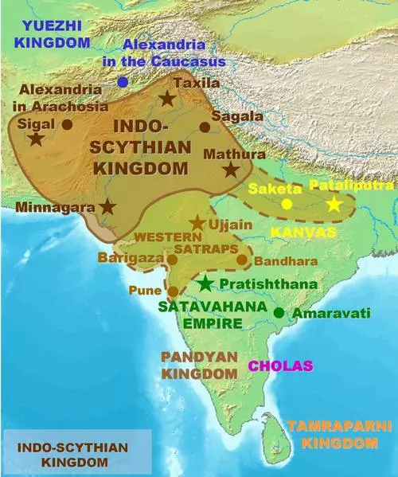

History of India
Ancient India

India is a rural in South Asia whose name originates from the Indus River.
The call 'Bharata' is utilized as an assignment for the US of their constitution referencing the chronicled fanciful sovereign, Bharata, whose story is educated, to some degree,
inside the Indian epic Mahabharata. As indicated by the compositions known as the Puranas (religious/noteworthy writings recorded inside the fifth century CE)
Bharata vanquished the total sub-landmass of India and ruled the land in harmony and agreement. The land become, along these lines, known as Bharatavarsha
('the sub-mainland of Bharata'). Homonid diversion in the Indian sub-mainland stretches returned more than 250,000 years and it is, thusly, one of the most seasoned possessed locales
in the world.Archaeological unearthings have watched antiques used by early people, together with stone gear, which suggest an all around early date for human home
also, time in the district. While the human advancements of Mesopotamia and Egypt have long been distinguished for his or her praised commitments to progress,
India has normally been disregarded, especially in the West, however her records and lifestyle is similarly as rich.
To learn More about Ancient India,Click the link given below
"Ancient India"
Pre-History of India
The regions of present-day India, Pakistan, and Nepal have furnished archaeologists and students with the richest web sites of the most historic pedigree.
The species Homo heidelbergensis (a proto human who turned into an ancestor of modern Homo sapiens) inhabited the sub-continent of India centuries earlier than humans migrated into
the location referred to as Europe.Evidence of the life of Homo heidelbergensis turned into first discovered in Germany in 1907 and, in view that, in addition discoveries have set up pretty
clean migration styles of this species out of Africa. Recognition of the antiquity in their presence in India has been in large part due to the fairly past due archaeological interest
inside the vicinity as, not like work in Mesopotamia and Egypt, Western excavations in India did no longer begin in earnest until the 1920’s CE.
Despite the fact that the old town of Harappa transformed into viewed to exist as right on time as 1842 CE, its archeological significance become ignored and the later
unearthings compared to an enthusiasm for finding the potentially sites noted inside the splendid Indian stories Mahabharata and Ramayana (both of the fifth or fourth hundreds of years BCE)
4while disregarding the likelihood of a miles more prominent old past for the district. The town of Balathal (near Udaipur in Rajasthan), to refer to handiest one occurrence, shows the
artifact of India's history as it dates to 4000 BCE. Balathal transformed into now not found until 1962 CE and unearthings had been not started there till the 1990's CE.
Archeological unearthings inside the previous fifty years have significantly altered the comprehension of India's past and, by method for expansion, worldwide history.
A 4000 a year antique skeleton situated at Balathal in 2009 CE gives the most established proof of disease in India. Preceding this find, uncleanliness become thought about a far more youthful infection
thought to had been conveyed from Africa to India in some undefined time later on and afterward from India to Europe by the military of Alexander the Great after his demise in 323 BCE.
It is currently comprehended that huge human intrigue was in progress in India by the Holocene Period (10,000 years back) and that numerous notable suppositions
in light of prior artworks in Egypt and Mesopotamia, need to be investigated and modified. The beginnings of the Vedic convention in India, all things considered rehearsed these days,
would now be able to be dated, as a base partially, to the indigenous people of recorded sites, for example, Balathal rather than, as consistently guaranteed, completely to the Aryan intrusion of c. 1500 BCE.
To learn More about Pre-History Of India,Click the link given below
"Pre-History Of India"
Mohenjo-Daro and Harappan Civilization
The Indus Valley Civilization dates to 5000 BCE and developed consistently during the decline Ganetic Valley area southwards and northwards to Malwa.
The towns of this period had been enormous than present day settlements in different nations, have been arranged by cardinal factors, and had been developed of residue blocks,
every now and again furnace terminated. Houses have been worked with an enormous yard starting from the front entryway, a kitchen/work space for the direction of sustenance, and littler rooms.
Family exercises seem to have assembled at the front of the living arrangement, especially the patio and, in this, are much the same as what has been construed from destinations in
Rome, Egypt, Greece, and Mesopotamia.
The most extreme well known sites of this time are the brilliant towns of Mohenjo-Daro and Harappa each situated in blessing day Pakistan
(Mohenjo-Daro in the Sindh region and Harappa in Punjab) which was a piece of India until the 1947 CE segment of the u . S . A . Which made the different nation.
Harappa has given its call to the Harappan Civilization (some other name for the Indus Valley Civilization) that is normally separated into Early, Middle, and Mature terms
comparing generally to 5000-4000 BCE (Early), 4000-2900 BCE (Middle), and 2900-1900 BCE (Mature). Harappa dates from the Middle time frame (c. 3000 BCE) while Mohenjo-Daro
was worked in the Mature length (c. 2600 BCE). Harappa changed into in enormous part obliterated inside the nineteenth century when British individuals over energized a great deal of the town for use as balance in c
onstructing the railroad and numerous homes had just been destroyed with the guide of occupants of the area town of Harappa (which gives the site its name) for use in their own special tasks.
It is subsequently now hard to decide the antiquated significance of Harappa shop that it's far clear it become once a sizable Bronze Age people group with a populace of upwards of 30,000 individuals.
Mohenjo-Daro, on the other hand, is bounty higher protected in light of the fact that it lay usually covered till 1922 CE. The name 'Mohenjo-Daro' approach 'hill of the futile's in Sindhi.
The true call of the city is obscure in spite of the way that various potential outcomes have been forewarned by method for uncovers inside the spot, among them, the Dravidian call 'Kukkutarma',
the town of the cockerel, a probable reference to the website page as a focal point of custom rooster battling or, maybe, as a rearing place for chickens.
Mohenjo-Daro was an intricately assembled city with roads spread out equally at appropriate points and an advanced seepage machine.
The Great Bath, an applicable shape on the website page, changed into warmed and appears to were a point of convergence for the network. The inhabitants have been gifted inside the utilization of metals which incorporate copper,
bronze, lead and tin (as prove by methods for works of art comprehensive of the bronze statue of the Dancing Girl and by individual seals)and developed grain, wheat, peas, sesame, and cotton.
To learn More about Mohenjo-Daro and Harappan Civilization,Click the link given below
"Mohenjo-Daro and Harappan"
The Vedic Period
The Aryan effect, a couple of researchers guarantee, gave upward push to what is known as the Vedic Period in India (c. 1700-150 BCE) described by methods for a peaceful lifestyle and adherence to the profound writings alluded to as The Vedas. Society have turned out to be isolated into 4 exercises (the Varnas) prominently alluded to as 'the standing gadget' which were made out of the Brahmana on the top (ministers and researchers), the Kshatriya next (the warriors), the Vaishya (ranchers and vendors), and the Shudra (workers).
The most minimal position transformed into the Dalits, the untouchables, who treated meat and waste, despite the fact that there might be some discussion about whether this polish existed in ancient times.
From the start, it shows up this standing gadget transformed into basically an impression of one's occupation in any case, in time, it have turned out to be all the more unbendingly deciphered to be resolved through one's start and one turned into never again permitted to exchange positions nor to wed into a station
aside from one's own. This learning was an impression of the recognition in an endless request to human presence directed by methods for a best divinity.
While the religious convictions which portrayed the Vedic Period are thought about tons more established, it changed into all through this time they have progressed toward becoming systematized on the grounds that the confidence
of Sanatan Dharma (which signifies 'Unceasing Order') recognized nowadays as Hinduism (this name getting from the Indus (or Sindus) River in which admirers have been known to gather, in this manner,
'Sindus', and afterward 'Hindus'). The fundamental principle of Sanatan Dharma is that there's a request and a reason to the universe and human life and, by tolerating this request and
abiding as per it, one will delight in ways of life since it is intended to be pleasantly lived. While Sanatan Dharma is considered through numerous a polytheistic confidence together with
numerous divine beings, it's far really monotheistic in that it holds there's one god, Brahma (the Self), who, in view of his significance, can't be completely caught store by means of the various
components which are uncovered in light of the fact that the various lords of the Hindu pantheon. It is Brahma who announcements the everlasting request and keeps up the universe by means of it. This faith in an
request to the universe mirrors the stableness of the general public wherein it developed and prospered as, over the span of the Vedic Period, governments wound up brought together and social traditions
consolidated totally into consistently life over the area. Other than The Vedas, the marvelous otherworldly and scholarly works of The Upanishads, The Puranas, The Mahabharata, and
The Ramayana all originate from this time.
In the sixth century BCE, the otherworldly reformers Vardhaman Mahavira (549-477 BCE) and Siddhartha Gautama (563-483 BCE) split away
from standard Sanatan Dharma to at last make their very own religions of Jainism and Buddhism. These adjustments in religion were a piece of an a lot more extensive example of social and
social change which came about inside the arrangement of city states and the upward push of compelling kingdoms (comprising of the Kingdom of Magadha underneath the ruler Bimbisara).
Expanded urbanization and riches pulled in the consideration of Cyrus, leader of the Persian Empire, who attacked India in 530 BCE and started a crusade of success inside the
region. After ten years, underneath the rule of his child, Darius I, northern India changed into solidly beneath Persian deal with (the territories like Afghanistan and Pakistan these days)
also, the number of inhabitants here trouble to Persian laws and traditions. One impact of this, likely, changed into an osmosis of Persian and Indian non mainstream convictions which
a couple of understudies point to as an explanation for further religious and social changes.
To learn More about Vedic Peroid Of India,Click the link given below
"Vedic Peroid Of India"
The Great Empires of Ancient India
Persia held predominance in northern India until the victory of Alexander the Great in 327 BCE. One a year later, Alexander had crushed the Achaemenid Empire and immovably vanquished the Indian subcontinent. Once more, outside impacts have been included to suffer on the region offering ascend to the Greco-Buddhist way of life which affected all areas of culture in northern India from craftsmanship to religion to get dressed. Statues and reliefs from this period portray Buddha, and various figures, as generally Hellenic in get dressed and present (alluded to as the Gandhara School of Art). Following Alexander's takeoff from India, the Maurya Empire (322-185 BCE) ascended underneath the rule of Chandragupta Maurya (322-298) till, by means of the stop of the 0.33 century BCE, it governed over practically all of northern India.
Maurya Empire(322-180 BCE)
- Chandragupta 322–297 BCE
- Bindusara 297–272/268 BCE
- Ashoka 272/268–232 BCE
- Dasharatha 232–224 BCE
- Samprati 224–215 BCE
- Shalishuka 215–202 BCE
- Devavarman 202–195 BCE
- Shatadhanvan 195–187 BCE
- Brihadratha 187–180 BCE
Chandragupta's child, Bindusara ruled among 298-272 BCE and expanded the domain eventually of the whole of India. His child was Ashoka the Great (lived 304-232, ruled 269-232 BCE) underneath whose standard the domain thrived at its stature. Eight years into his rule, Ashoka vanquished the eastern city-kingdom of Kalinga which prompted a loss of life numbering more than one hundred,000.
Stunned on the annihilation and death toll, Ashoka grasped the lessons of the Buddha and propelled into a logical program upholding Buddhist idea and ideas.
He mounted numerous religious communities and offered luxuriously to Buddhist gatherings. His fervent help of Buddhist qualities at last incited a worry at the experts each monetarily
furthermore, politically as even his grandson, Sampadi, inheritor to the royal position, antagonistic his principles. By the stop of Ashoka's rule the specialists treasury changed into truly exhausted through his
ordinary otherworldly gifts and, after his passing, the realm declined out of the blue.
The US chipped into numerous little kingdoms and realms, (for example, the Kushan Empire) in what has come to be known as the Middle Period.
This innovation saw the blast of exchange with Rome (which had all begun c. One hundred thirty BCE) following Augustus Caesar's success of Egypt in 30 BCE (Egypt had been India's most steady buddy
in change inside the past). This turned into a period of individual and social improvement inside the various kingdoms which eventually prospered in what is thought about the Golden Age of India underneath
the rule of the Gupta Empire (320-550 CE).
The Gupta Empire is thought to were based through one Sri Gupta ('Sri' technique 'Ruler') who no doubt controlled between 240-280 CE.
As Sri Gupta is thought to have been of the Vaishya (specialist co-op) class, his ascent to control in resistance of the position gadget is uncommon.
He laid the motivation for the specialists which may so balance out India that genuinely every segment of convention achieved its top under the rule of the Guptas.
Reasoning, writing, science, arithmetic, design, space science, age, fine art, building, religion, and cosmology, among various fields, all thrived all through this period,
resulting in probably the best of human accomplishments. The Puranas of Vyasa had been incorporated during this period and the well known caverns of Ajanta and Ellora, with their entangled
carvings and vaulted rooms, were likewise begun. Kalidasa the artist and writer composed his magnum opus Shakuntala and the Kamasutra become also composed, or arranged from ahead of time works,
by utilizing Vatsyayana. Varahamihira investigated cosmology on the equivalent time as Aryabhatta, the mathematician, made his own disclosures inside the field and furthermore recognized the significance of
the possibility of 0, which he's credited with developing. As the author of the Gupta Empire opposed conventional Hindu idea, it isn't amazing that the Gupta rulers energized
what's more, proliferated Buddhism as the national observation and this is the reason for the plentitude of Buddhist works of fine art, rather than Hindu, at sites comprehensive of Ajanta and Ellora.
To learn More about Great Empires of Ancient Of India,Click the link given below
"Great Empires"
The Decline of Empire and the Coming of Islam
The realm declined gradually underneath a progression of frail rulers till it fallen around 550 CE.
The Gupta Empire turned out to be at that point changed by method for the standard of Harshavardhan (590-647) who ruled the area for forty two years.
An artistic man of broad achievements (he wrote 3 plays further to different works) Harshavardhan transformed into a client of expressions of the human experience and a religious
Buddhist who disallowed the slaughtering of creatures in his kingdom anyway recognized the need to every so often murder individuals in battle. He turned into a hugely proficient military
strategist who transformed into just vanquished inside the region once in his reality. Under his rule, the north of India prospered however his country fallen after his passing.
The attack of the Huns had been over and again repulsed with the guide of the Guptas after which through Harshavardhan at the same time, with the fall of his nation, India fell into bedlam and divided into
little kingdoms missing the solidarity indispensable to battle off attacking powers.
In 712 CE the Muslim wellknown Muhammed canister Quasim vanquished northern India, sorting out himself in the spot of present day-day Pakistan.
The Muslim attack saw a quit to the indigenous domains of India and, from that point on, impartial town states or gatherings underneath the control of a town
may be the standard model of administration. The Islamic Sultanates ascended inside the spot of front line day Pakistan and unfurl north-west. The unique world
perspectives on the religions which presently challenged each other for appeal inside the zone and the scope of dialects spoken, made the solidarity and social advances,
for example, were unmistakable inside the season of the Guptas, extreme to breed. Thus, the region was effectively vanquished by utilizing the Islamic Mughal Empire.
Mughal Dynasty
List of Mughal Sultans
- Babur
- Humayun
- Akbar
- Jahangir
- Shah Jahan
- Aurangzeb (Alamgir)
- Muhammad Azam Shah
- Bahadur Shah I
Mughal administration, Mughal also spelled Mogul, Arabic Mongol, Muslim line of Turkic-Mongol starting point that ruled the vast majority of northern India from the mid sixteenth to the mid-eighteenth century. After that time it kept on existing as a strikingly diminished and progressively increasingly weak element till the mid-nineteenth century. The Mughal tradition was astonishing for its extra than two centuries of incredible principle over a lot of India, for the limit of its rulers, who through seven ages kept up a document of exceptional skill, and for its regulatory organization. A likewise refinement turned into the endeavor of the Mughals, who had been Muslims, to join Hindus and Muslims directly into a unified Indian state.
The line become established by methods for a Chagatai Turkic sovereign named Bābur (ruled 1526–30), who moved toward becoming slipped from the Turkic vanquisher Timur (Tamerlane) on his dad's feature
furthermore, from Chagatai, second child of the Mongol ruler Genghis Khan, on his mom's aspect. Expelled from his genealogical area in Central Asia, Bābur developed to move toward becoming to India to
fulfill his craving for success. From his base in Kabul (Afghanistan) he changed into ready to quiet control of the Punjab area, and in 1526 he steered the powers of the Delhi sultan
Ibrāhīm Lodī on the First Battle of Panipat. The next year he squashed the Rajput alliance under Rana Sanga of Mewar, and in 1529 he crushed the Afghans of what are
presently jap Uttar Pradesh and Bihar states. At his downfall in 1530 he controlled all of northern India from the Indus River on the west to Bihar at the east and from the Himalayas
south to Gwalior.
Bābur's child Humāyūn (ruled 1530–40 and 1555–56) lost control of the realm to Afghan radicals,
be that as it may, Humāyūn's child Akbar (ruled 1556–1605) vanquished the Hindu usurper Hemu at the Second Battle of Panipat (1556) and in this manner restored his tradition in Hindustan.
The best of the Mughal rulers and an incredibly competent ruler, Akbar restored and combined the Mughal Empire. Through unremitting fighting, he had the option to add
all of northern and part of focal India, yet he received appeasing approaches toward his Hindu subjects and looked to enroll them in his militaries and taxpayer supported organization.
The political, authoritative, and military structures that he made to administer the domain were the central factor behind its proceeded with survival for one more century and a half.
At Akbar's demise in 1605 the realm stretched out from Afghanistan to the Bay of Bengal and southward to what is currently Gujarat state and the northern Deccan district (peninsular India).
Akbar's child Jahāngīr (ruled 1605–27) proceeded with the two his dad's authoritative framework and his tolerant approach toward Hinduism and in this manner demonstrated to be a genuinely effective ruler.
His child, Shah Jahān (ruled 1628–58), had an unquenchable energy for structure, and under his standard the Taj Mahal of Agra and the Jāmiʿ Masjid (Great Mosque) of Delhi,
among different landmarks, were raised. His rule denoted the social pinnacle of Mughal rule, yet his military undertakings carried the domain to the edge.
Jahāngīr's tolerant and illuminated standard remained in checked differentiation to the Muslim religious extremism shown by his progressively customary successor,
Aurangzeb (ruled 1658–1707). Aurangzeb added the Muslim Deccan kingdoms of Vijayapura (Bijapur) and Golconda and in this manner carried the realm to its most prominent degree,
in any case, his political and religious bigotry laid the seeds of its decrease. He avoided Hindus from open office and decimated their schools and sanctuaries, while his mistreatment
of the Sikhs of the Punjab turned that faction against Muslim guideline and stirred uprisings among the Rajputs, Sikhs, and Marathas. The substantial expenses he demanded relentlessly devastated the
cultivating populace, and an enduring rot in the nature of Mughal government was along these lines coordinated by a comparing monetary decrease.
At the point when Aurangzeb kicked the bucket in 1707, he had neglected to pulverize the Marathas of the Deccan, and his position was contested all through his domains.
During the rule of Muḥammad Shah (1719–48), the domain started to separate, a procedure hurried by dynastic fighting, factional contentions,
what's more, the Iranian champion Nādir Shah's brief yet troublesome intrusion of northern India in 1739. After the passing of Muḥammad Shah in 1748, the Marathas
overran practically all of northern India. Mughal standard was decreased to just a little region around Delhi, which go under Maratha (1785) and after that British (1803) control.
The last Mughal, Bahādur Shah II (ruled 1837–57), was banished to Yangon, Myanmar (Rangoon, Burma) by the British after his inclusion with the Indian Mutiny of 1857–58.
Modern History of India
During the late sixteenth and the seventeenth Centuries, the European exchanging organizations India contended with one another savagely.
By the last quarter of the eighteenth Century the English had beaten all others and set up themselves as the predominant power in India.
The British directed India for a time of around two centuries and achieved progressive changes in the social, political and the financial existence of the nation.
When the British set their foot decidedly on Indian soil, they started the business abuse of the characteristic assets of India.
By the center of the nineteenth Century pompous misuse of the general population had attempted the persistence of the Indians as far as possible.
The British dominion achieved its apex between the center of the nineteenth century and the First World War. The exploitative approaches of the British in
India saw the introduction of patriot fomentation against it. With expanding interruption of outsiders in their lives, a gathering of white collar class Indians shaped the Indian National Congress (1885).
The counter British battle turned out to be genuinely a mass development with the entry of Mahatma Gandhi (1869 - 1948). It was trailed by various developments against the British guideline.
With the progression of time and determination of the Indians the British had come to understand that the day was not far-removed when they should stop India.
Progressive crusades had the impact of driving the British out of India in 1947, however with freedom came the autonomy of the nation into Pakistan
Great Freedom Fighter
Mahatama Gandhi
Mahatma Gandhi drove the Indian autonomy development and was fruitful in liberating India from the grip of the British.
He utilized peacefulness and occupied with different developments as a feature of his rousing dissent against the British guideline.
He proceeded to turn into the most huge opportunity contender and consequently is called as the 'Father of the Nation.
To learn about Mahatama Gandhi. Click on the picture given below

Bhagat Singh
The name Bhagat Singh is synonymous with penance, mental fortitude, dauntlessness and vision.
By giving up his life at 30 years old, Bhagat Singh turned into a motivation and an image of chivalry.
Alongside different progressives, Bhagat Singh established the Hindustan Socialist Republican Association.
To help the British government to remember its offenses, Bhagat Singh heaved a bomb in the Central Legislative Assembly.
By grasping passing at a youthful age, Singh turned into an image of penance and mental fortitude, consequently dwelling everlastingly in the hearts of each Indian.
To learn about Bhagat Singh. Click on the picture given below

Rani Lakshmi Bai
One of the key individuals from India's first war of freedom, Rani Lakshmi Bai proceeded to rouse thousands
of ladies to join the battle for opportunity. On 23 March, 1858 Lakshmi Bai protected her royal residence and the whole city of Jhansi when it was threatened to
be caught by British troops driven by Sir Hugh Rose.
To learn about Rani Laxmi Bai. Click on the picture given below